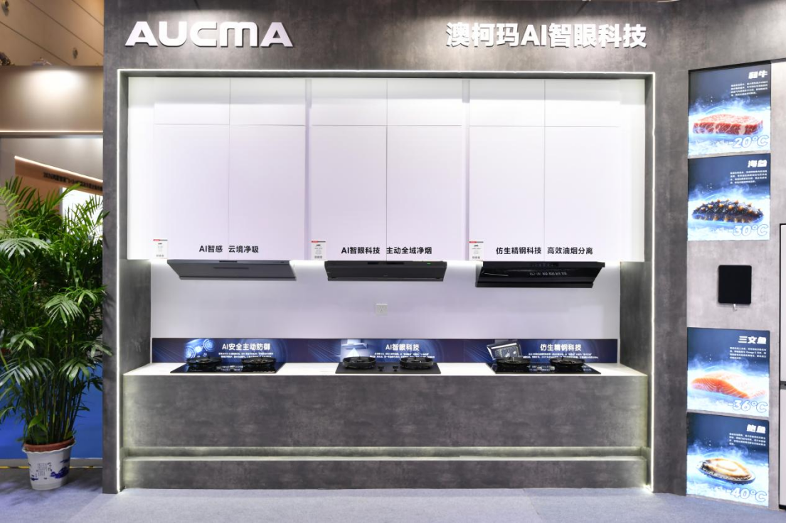

厨房智能硬件 · 竞品动态
电博会观察：澳柯玛让烟机“看见”烹饪，烟灶协同再进一步
从手动开关，走向感知油烟、自动调节。厨房里最有感的智能，往往藏在少一次操作之中。

9 月 6 日电博会闭幕通报将澳柯玛 AI 烟灶联动列为现场亮点。品牌此前披露，G608 Pro 油烟机通过 AI 智眼识别预判油烟，自动启停并匹配风量。
两份资料分别呈现单机感知与设备联动的方向。本条按本届展会观察收录；功能描述来自品牌及主办方，尚无独立实测结果。
电博会主办方 / 美通社 · 2026-09-06 18:19澳柯玛供稿 / 青岛新闻网 · 2026-09-04 16:22近 24 小时展会回顾 · 产品资料 9/4
编辑评分 88/100 · 配图自评 92/100